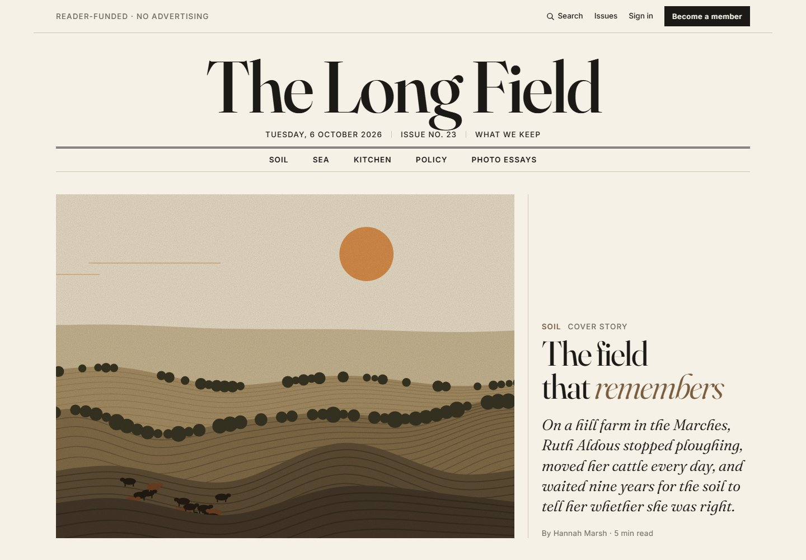

Design exploration / Editorial
The Long Field
A reader-funded magazine prototype built around expressive type and art-directed long-form stories.

The idea behind the interface.
A fictional food and farming magazine with the rhythm of a printed publication. Serif headlines, ruled columns, drop caps, pull quotes, and sidenotes bring editorial structure to a plain HTML, CSS, and JavaScript implementation.
Inside the build
- Structured story blocks support feature articles, short reads, photo essays, sidebars, and galleries.
- Five opening templates and four tones give each story its own art direction, with responsive editor previews.
- Issue archives, contributor pages, filtered search, reading metering, and speech-synthesis narration complete the prototype.
Scope & context
Front-end concept. Membership, payment, and metering are local simulations; illustrations are generated SVG plates, not commissioned photography.